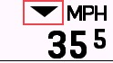
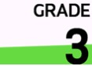
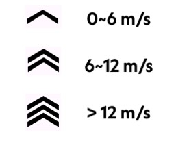
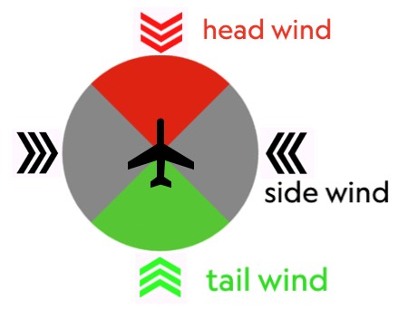
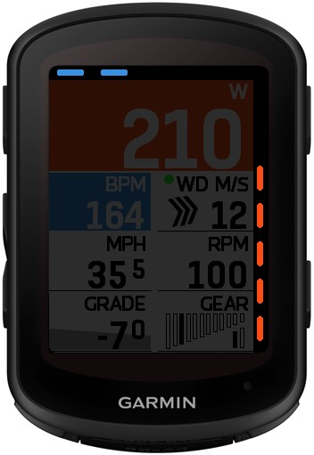
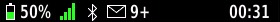
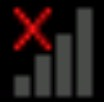
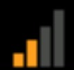
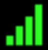
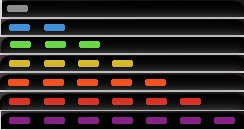

모듈 소개¶
I 실시간 모니터링 데이터¶
1. 현재 파워¶
실시간 라이딩 파워 출력을 표시합니다.
색상
이는 배경색을 표시할 수 있는 모듈입니다. ConnectIQ 앱에서 두 가지 색상 시퀀스 스타일을 선택할 수 있습니다. 그러나 사용자는 개별 색상이나 구간 범위를 사용자 정의할 수 없습니다.
- Garmin 스타일: 회색-파란색-녹색-노란색-주황색-빨간색-보라색 (구간 1~구간 7)
- Wahoo 스타일: 회색-진한 파란색-연한 파란색-녹색-노란색-주황색-빨간색 (구간 1~구간 7)
평균 파워 인디케이터¶
이는 현재/해제 가능한 설정으로, 현재 파워 모듈 내에서 현재 파워와 평균 파워를 비교하는 데 사용됩니다. ConnectIQ 앱에서 설정할 수 있습니다. "화살표" 표시 모드를 지원합니다.
- "화살표"
- 위쪽: 평균 파워보다 높음
- 아래쪽: 평균 파워보다 낮음
- 표시 없음: 평균 파워와 같거나 라이딩 시작 안 함
2. 현재 속도¶
현재 라이딩 속도를 표시합니다. 단위는 사용자의 Garmin Connect 설정과 일치합니다 (kph/mph).
평균 속도 인디케이터¶
이는 현재/해제 가능한 설정으로, 현재 속도 모듈 내에서 현재 속도와 평균 속도를 비교하는 데 사용됩니다. ConnectIQ 앱에서 설정할 수 있습니다. "화살표"와 "배경" 두 가지 표시 모드가 있습니다.
- "화살표"

- 위쪽 화살표: 평균 속도보다 높음
- 아래쪽 화살표: 평균 속도보다 낮음
- 표시 없음: 평균 속도와 같거나 라이딩 시작 안 함
- "배경"
- 빨간색: 평균 속도보다 낮음
- 녹색: 평균 속도보다 높음
3. 현재 심박수¶
실시간 심박수 데이터를 표시합니다.
색상
이는 배경색을 설정할 수 있는 모듈입니다. ConnectIQ 앱에서 두 가지 색상 시퀀스 스타일을 선택할 수 있습니다. 그러나 사용자는 개별 색상이나 구간 범위를 사용자 정의할 수 없습니다.
- Garmin 스타일: 회색-회색-파란색-녹색-노란색-빨간색 (<구간 1, 구간 1~구간 5)
- Wahoo 스타일: 회색-파란색-녹색-노란색-주황색-빨간색 (<구간 1, 구간 1~구간 5)
평균 심박수 인디케이터¶
이는 현재/해제 가능한 설정으로, 현재 심박수 모듈 내에서 현재 심박수와 평균 심박수를 비교하는 데 사용됩니다. ConnectIQ 앱에서 설정할 수 있습니다. "화살표" 표시 모드를 지원합니다.
- "화살표"
- 위쪽: 평균 심박수보다 높음
- 아래쪽: 평균 심박수보다 낮음
- 표시 없음: 평균 심박수와 같거나 라이딩 시작 안 함
4. 현재 케이던스¶
실시간 케이던스 값을 표시합니다.
평균 케이던스 인디케이터¶
이는 현재/해제 가능한 설정으로, 현재 케이던스 모듈 내에서 현재 케이던스와 평균 케이던스를 비교하는 데 사용됩니다. ConnectIQ 앱에서 설정할 수 있습니다. "화살표" 표시 모드를 지원합니다.
- "화살표"
- 위쪽: 평균 케이던스보다 높음
- 아래쪽: 평균 케이던스보다 낮음
- 표시 없음: 평균 케이던스와 같거나 라이딩 시작 안 함
5. 현재 고도¶
현재 고도를 표시합니다. 단위는 사용자의 Garmin Connect 설정과 일치합니다 (m/ft).
6. 현재 경사도*¶
현재 경사도를 표시합니다.
*Garmin 공식에서 데이터 인터페이스를 제공하지 않기 때문에 계산된 데이터가 부정확하거나 잘못될 수 있습니다
색상
이는 배경색을 표시할 수 있는 모듈입니다. 색상은 해당 경사도에 따라 변하지만, 사용자는 색상이나 경사도 범위를 사용자 정의할 수 없습니다.
| 예시 |  |
|||||
|---|---|---|---|---|---|---|
| 경사도 범위 | < 0.5% | 0.5%~3.99% | 4%~7.99% | 8%~11.99% | 12%~19.99% | > 20% |
II 평균 및 누적 데이터¶
7. 3초 평균 파워*¶
지난 3초간의 평균 파워를 표시합니다. 색상 표시는 실시간 파워와 동일합니다.
*Garmin 공식에서 데이터 인터페이스를 제공하지 않기 때문에 계산된 데이터가 부정확하거나 잘못될 수 있습니다
8. 5초 평균 파워*¶
지난 5초간의 평균 파워를 표시합니다. 색상 표시는 실시간 파워와 동일합니다.
*Garmin 공식에서 데이터 인터페이스를 제공하지 않기 때문에 계산된 데이터가 부정확하거나 잘못될 수 있습니다
9. 10초 평균 파워*¶
지난 10초간의 평균 파워를 표시합니다. 색상 표시는 실시간 파워와 동일합니다.
*Garmin 공식에서 데이터 인터페이스를 제공하지 않기 때문에 계산된 데이터가 부정확하거나 잘못될 수 있습니다
10. 랩 평균 파워*¶
현재 랩의 평균 파워를 표시합니다.
*Garmin 공식에서 데이터 인터페이스를 제공하지 않기 때문에 계산된 데이터가 부정확하거나 잘못될 수 있습니다
11. 평균 파워¶
현재 활동의 전체 평균 파워를 표시합니다.
12. 평균 심박수¶
현재 활동의 평균 심박수를 표시합니다.
13. 평균 속도¶
현재 활동의 평균 속도를 표시합니다.
14. 활동 시간¶
현재 활동의 지속 시간을 표시합니다.
15. 경과 시간(총 시간)¶
현재 활동의 총 시간을 표시합니다(일시정지 시간 포함).
16. 랩 시간*¶
현재 랩의 지속 시간을 표시합니다.
*Garmin 공식에서 데이터 인터페이스를 제공하지 않기 때문에 계산된 데이터가 부정확하거나 잘못될 수 있습니다
17. 거리¶
현재 활동의 누적 라이딩 거리를 표시합니다.
18. 총 상승¶
현재 활동 중 획득한 총 고도를 표시합니다.
19. 총 하강¶
현재 활동 중 잃은 총 고도를 표시합니다.
20. 랩 평균 심박수*¶
현재 랩의 평균 심박수를 표시합니다.
*Garmin 공식에서 데이터 인터페이스를 제공하지 않기 때문에 계산된 데이터가 부정확하거나 잘못될 수 있습니다
21. 총 작업량 (kJ)*¶
현재 활동 중 수행된 총 작업량을 킬로줄(kJ) 단위로 표시합니다. 이 측정은 파워미터에서 나오므로 파워미터가 필요합니다.
*Garmin 공식에서 데이터 인터페이스를 제공하지 않기 때문에 계산된 데이터가 부정확하거나 잘못될 수 있습니다
22. 랩 거리*¶
현재 랩에서 커버한 거리를 표시합니다.
*Garmin 공식에서 데이터 인터페이스를 제공하지 않기 때문에 계산된 데이터가 부정확하거나 잘못될 수 있습니다
23. 평균 케이던스¶
현재 활동의 평균 케이던스를 표시합니다.
24. 랩 평균 속도*¶
현재 랩의 평균 속도를 표시합니다.
*Garmin 공식에서 데이터 인터페이스를 제공하지 않기 때문에 계산된 데이터가 부정확하거나 잘못될 수 있습니다
25. 칼로리¶
현재 활동에서 소모한 칼로리를 표시합니다.
III 최대값¶
26. 최대 파워¶
현재 활동 중 달성한 최대 파워를 표시합니다.
27. 최대 심박수¶
현재 활동 중 달성한 최대 심박수를 표시합니다.
28. 최대 속도¶
현재 활동 중 달성한 최대 속도를 표시합니다.
29. 최대 케이던스¶
현재 활동 중 달성한 최대 케이던스를 표시합니다.
30. 랩 수¶
현재 활동의 총 랩 수를 표시합니다. 활동 시작 시 랩 수는 1로 설정됩니다.
IV 훈련 지표¶
31. 현재 파워 대 체중 비율¶
현재 활동의 실시간 파워 대 체중 비율을 W/Kg 단위로 표시합니다. 파워는 MyGahoo 설정 페이지의 입력에서, 체중은 Garmin 프로필 페이지의 설정에서 가져옵니다.
32. 3초 평균 파워 대 체중 비율*¶
지난 3초간의 평균 파워 대 체중 비율을 W/Kg 단위로 표시합니다.
*Garmin 공식에서 데이터 인터페이스를 제공하지 않기 때문에 계산된 데이터가 부정확하거나 잘못될 수 있습니다
33. 10초 평균 파워 대 체중 비율*¶
지난 10초간의 평균 파워 대 체중 비율을 W/Kg 단위로 표시합니다.
*Garmin 공식에서 데이터 인터페이스를 제공하지 않기 때문에 계산된 데이터가 부정확하거나 잘못될 수 있습니다
34. 랩 평균 파워 대 체중 비율*¶
현재 랩의 평균 파워 대 체중 비율을 W/Kg 단위로 표시합니다.
*Garmin 공식에서 데이터 인터페이스를 제공하지 않기 때문에 계산된 데이터가 부정확하거나 잘못될 수 있습니다
35. NP™ (정규화 파워)*¶
현재 활동의 정규화 파워를 표시합니다.
데이터 손실 위험
활동 중에 MyGahoo 필드를 "재추가"하거나 다른 라이딩 모드에 들어가면 이 모듈의 데이터가 지워집니다. (하지만 Garmin 자체가 기록하는 활동은 영향을 받지 않으며, MyGahoo만 이러한 데이터의 축적을 처음부터 다시 시작합니다).
™정규화 파워(NP) 및 훈련 스트레스 점수(TSS)는 Peaksware, LLC의 등록 상표입니다.
*Garmin 공식에서 데이터 인터페이스를 제공하지 않기 때문에 계산된 데이터가 부정확하거나 잘못될 수 있습니다
36. TSS™ (훈련 스트레스 점수)*¶
현재 활동의 훈련 스트레스 점수를 표시합니다.
데이터 손실 위험
활동 중에 MyGahoo 필드를 "재추가"하거나 다른 라이딩 모드에 들어간 후 현재 모드로 돌아오면 이 모듈의 데이터가 지워집니다. (하지만 Garmin 자체가 기록하는 활동은 영향을 받지 않으며, MyGahoo만 이러한 데이터의 축적을 처음부터 다시 시작합니다).
™정규화 파워(NP) 및 훈련 스트레스 점수(TSS)는 Peaksware, LLC의 등록 상표입니다.
*Garmin 공식에서 데이터 인터페이스를 제공하지 않기 때문에 계산된 데이터가 부정확하거나 잘못될 수 있습니다
37. W'Balance*¶
현재 활동의 W'Balance (W prime balance)를 표시합니다. 이것이 작동하려면 CP (Critical Power)와 W' (W Prime)를 미리 정의해야 합니다. 과학적 설명에 대해서는 그것이 무엇인지 설명하는 많은 기사와 비디오가 있습니다.
활동 중에 이 필드는 녹색 또는 빨간색이 됩니다. 녹색인 경우 현재 파워가 CP보다 낮다는 것을 나타내며, 다시 말해 "회복" 중임을 의미합니다. 반대로 빨간색인 경우는 소모 중임을 나타냅니다.
현재 수학 모델은 Froncioni / Clarke의 미분 모델을 사용합니다:
W′bal = W′bal + (CP - P) * (W′ - W′bal) / W′ when P > CP
W′bal = W′bal + (CP - P) when P < CP
*Garmin 공식에서 데이터 인터페이스를 제공하지 않기 때문에 계산된 데이터가 부정확하거나 잘못될 수 있습니다
38. 현재 훈련 단계 남은 시간¶
현재 훈련 워크아웃 단계의 카운트다운 남은 시간을 표시합니다. Garmin 구조화 훈련(Workout)이 시작된 경우에만 적용됩니다. 현재 훈련 단계에 시간 제한이 없으면 데이터가 표시되지 않습니다.
39. IF™ (강도 계수)*¶
현재 활동의 강도 계수를 표시합니다. 이 훈련 세션의 강도 수준을 평가하는 데 사용됩니다.
™강도 계수(IF)는 Peaksware, LLC의 등록 상표입니다.
*Garmin 공식에서 데이터 인터페이스를 제공하지 않기 때문에 계산된 데이터가 부정확하거나 잘못될 수 있습니다
V 장비 정보¶
40. 기어 표시¶
현재 체인링/카세트의 톱니 수를 표시합니다. 예: 52/13
41. 기어 번호¶
현재 체인링/카세트의 인덱스 번호를 표시합니다. 예: 1/7
42. 기어비¶
현재 체인링을 카세트 톱니 수로 나눈 기어비를 표시합니다. 예: 4.02
43. 기어비 차트¶
기어비 정보를 그래픽으로 표시합니다.
VI 내비게이션 정보¶
44. 목적지까지의 거리¶
목적지까지의 남은 거리를 표시합니다.
45. 목적지까지의 예상 시간*¶
목적지 도착까지의 예상 남은 시간을 표시합니다. 이는 지금까지의 평균 속도를 기반으로 추정되며, 시작 시의 급격한 변동을 피하기 위해 활동 시작 후 10초 후에 수치가 표시됩니다.
*Garmin 공식에서 데이터 인터페이스를 제공하지 않기 때문에 계산된 데이터가 부정확하거나 잘못될 수 있습니다
46. 예상 도착 시간*¶
목적지로의 예상 도착 시간을 표시합니다. 이는 지금까지의 평균 속도를 기반으로 추정되며, 시작 시의 급격한 변동을 피하기 위해 활동 시작 후 10초 후에 수치가 표시됩니다.
*Garmin 공식에서 데이터 인터페이스를 제공하지 않기 때문에 계산된 데이터가 부정확하거나 잘못될 수 있습니다
VII 데이터 분석¶
47. 실시간 좌우 밸런스¶
현재 좌우 파워 밸런스를 표시합니다. 퍼센트로 표시되며 % 기호는 포함되지 않습니다. 예: 52-48
48. 3초 평균 좌우 밸런스*¶
3초간의 평균 좌우 파워 밸런스 비율을 표시합니다.
*Garmin 공식에서 데이터 인터페이스를 제공하지 않기 때문에 계산된 데이터가 부정확하거나 잘못될 수 있습니다
49. 파워 구간 히스토그램*¶
다른 파워 구간의 시간 분포를 표시합니다.
데이터 손실 위험
활동 중에 MyGahoo 필드를 "재추가"하거나 다른 라이딩 모드에 들어간 후 현재 모드로 돌아오면 이 모듈의 데이터가 지워집니다. (하지만 Garmin 자체가 기록하는 활동은 영향을 받지 않으며, MyGahoo만 이러한 데이터의 축적을 처음부터 다시 시작합니다).
*Garmin 공식에서 데이터 인터페이스를 제공하지 않기 때문에 계산된 데이터가 부정확하거나 잘못될 수 있습니다
50. 심박 구간 히스토그램*¶
다른 심박 구간의 시간 분포를 표시합니다.
데이터 손실 위험
활동 중에 MyGahoo 필드를 "재추가"하거나 다른 라이딩 모드에 들어간 후 현재 모드로 돌아오면 이 모듈의 데이터가 지워집니다. (하지만 Garmin 자체가 기록하는 활동은 영향을 받지 않으며, MyGahoo만 이러한 데이터의 축적을 처음부터 다시 시작합니다).
*Garmin 공식에서 데이터 인터페이스를 제공하지 않기 때문에 계산된 데이터가 부정확하거나 잘못될 수 있습니다
51. 페달링 효율성¶
현재 좌우 페달의 토크 효율성을 퍼센트로 표시합니다. 이 데이터 인터페이스를 지원하는 파워미터가 필요합니다.
- 형식: 왼쪽% / 오른쪽%
- 파워미터가 좌우별 데이터를 지원하지 않으면 결합된 값만 표시됩니다
52. 스무스니스¶
현재 좌우 페달의 페달링 스무스니스를 퍼센트로 표시합니다. 이 데이터 인터페이스를 지원하는 파워미터가 필요합니다.
- 형식: 왼쪽% / 오른쪽%
- 파워미터가 결합된 데이터만 지원하는 경우(좌우 구분 없음) 결합된 값만 표시됩니다
VIII 환경 정보¶
53. 시계¶
현재 시간을 표시합니다.
54. 배터리¶
현재 배터리 레벨을 퍼센트로 표시합니다.
55. 온도 (센서)¶
현재 온도를 섭씨 또는 화씨로 표시합니다. 5분마다 업데이트됩니다. 빈도는 Garmin의 제한으로 인해 이보다 높을 수 없습니다.
56. 바람*¶
현재 풍속과 상대/절대 풍향을 표시합니다.
*Garmin 공식에서 데이터 인터페이스를 제공하지 않기 때문에 계산된 데이터가 부정확하거나 잘못될 수 있습니다
풍속 단위¶
- m/s: 미터/초
- KPH: 킬로미터/시
- MPH: 마일/시
- Beaufort scale: 풍력 계급, 0~12급
풍속 레벨¶
풍속 레벨은 화살표 수로 표시되며, 다른 수에 해당하는 풍속은 아래 그림에 나와 있습니다. 선택한 풍속 단위가 m/s가 아닌 경우, 화살표 수는 표시되는 숫자가 아닌 올바른 풍속을 기반으로 계산됩니다.

절대/상대 풍향¶
- 절대 풍향: 일기 예보에서 주어지는 풍향으로, 라이딩 방향과 무관
- 상대 풍향: 현재 라이딩 방향과 풍향의 상대 각도. 예를 들어, 서쪽으로 향해 달리고 절대 풍향이 북쪽에서 남쪽인 경우, 상대 풍향은 오른쪽에서 왼쪽이 됩니다.
풍향 색상¶
상대 풍향을 표시할 때, 화살표는 바람 각도에 따라 색상이 구분됩니다. 빨간색은 맞바람(상대 바람이 왼쪽 앞 45°에서 오른쪽 앞 45°)을 나타내고, 녹색은 뒷바람(상대 바람이 왼쪽 뒤 45°에서 오른쪽 뒤 45°)을 나타내며, 검은색은 옆바람을 나타냅니다.

설정¶
바람 모듈은 최적의 표시 효과를 얻기 위해 ConnectIQ 앱에서의 설정이 필요합니다. 자세한 내용은 날씨 설정 모듈을 참조하세요.
57. 온도 (OpenWeather)*¶
현재 온도를 섭씨 또는 화씨로 표시합니다. 데이터 소스는 OpenWeather이므로 데이터를 활성화하려면 유효한 OpenWeather API 설정이 필요합니다.
58. 체감 온도 (OpenWeather)*¶
현재 체감 온도를 섭씨 또는 화씨로 표시합니다. 데이터 소스는 OpenWeather이므로 데이터를 활성화하려면 유효한 OpenWeather API 설정이 필요합니다.
59. 습도 (OpenWeather)*¶
현재 상대 습도를 퍼센트로 표시합니다. 데이터 소스는 OpenWeather이므로 데이터를 활성화하려면 유효한 OpenWeather API 설정이 필요합니다.
60. 일출 시간¶
그날의 일출 시간을 표시합니다. 데이터 소스는 Garmin의 내장 날씨 서비스이며, 기기가 날씨 기능을 지원해야 합니다(530/830 이상 모델) GPS 위치가 획득되어야 합니다.
61. 일몰 시간¶
그날의 일몰 시간을 표시합니다. 데이터 소스는 Garmin의 내장 날씨 서비스이며, 기기가 날씨 기능을 지원해야 합니다(530/830 이상 모델) GPS 위치가 획득되어야 합니다.
IX 가상 LED¶
가상 LED는 화면 가장자리 주변에 설정할 수 있습니다. 사용자는 다른 위치의 LED를 사용하여 다른 정보를 표시할 수 있습니다.

가상 LED의 두 수평 필드(위와 아래)는 현재 상태 표시줄을 지원합니다. 상태 표시줄의 아이콘은 왼쪽에서 오른쪽으로: 배터리, GPS 신호 상태, 전화 연결 상태(조건부), 읽지 않은 메시지(조건부), 시간입니다.

전화가 Garmin Edge에 연결되지 않은 경우 "Bluetooth" 아이콘은 표시되지 않습니다. 읽지 않은 메시지가 없는 경우 읽지 않은 메시지 아이콘은 표시되지 않습니다. 읽지 않은 메시지 수가 9를 초과하는 경우 실제 숫자 대신 항상 "9+"가 표시됩니다.
| 이미지 | 상태 | 설명 |
|---|---|---|
 |
QUALITY_NOT_AVAILABLE | GPS 사용 불가 |
| QUALITY_LAST_KNOWN | 마지막으로 알려진 GPS 위치를 기반으로 한 위치 | |
 |
QUALITY_POOR | 불량한 GPS 위치 계산에 의한 위치. 2-D GPS 위치만 사용 가능, 추적 위성 수 제한으로 인한 가능성 |
| QUALITY_USABLE | 사용 가능한 GPS 위치 계산에 의한 위치. 3-D GPS 위치 사용 가능, 경계 HDOP(수평 정밀도 저하) 있음 | |
 |
QUALITY_GOOD | 양호한 GPS 위치 계산에 의한 위치. 3-D GPS 위치 사용 가능, 양호에서 우수한 HDOP(수평 정밀도 저하) 있음 |
실시간 파워¶
가상 LED는 각 구간의 수와 색상을 표시합니다(아래 예시에서는 색상 스타일이 Garmin 스타일로 설정됨)

3초 평균 파워¶
위와 동일합니다.
심박 구간¶
가상 LED는 각 구간의 수와 색상을 표시합니다(아래 예시에서는 색상 스타일이 Garmin 스타일로 설정됨)
평균 속도 인디케이터¶
가상 LED는 현재 속도와 평균 속도의 관계를 표시하며, 빨간색은 지연(평균값보다 낮음), 파란색은 선행(평균값보다 높음)을 나타냅니다.
각 LED는 10%의 선행 또는 지연을 나타내며, 아래 표에 나와 있습니다. 표는 선행을 예로 들고 있으며, 지연도 같은 원리를 따릅니다.
| 예시 | 의미 |
|---|---|
| 평균 속도와 같음 | |
| 현재 선행 < 10% | |
| 10% < 현재 선행 < 20% | |
| 현재 선행 > 20% |
평균 파워 인디케이터¶
가상 LED는 현재 파워와 평균 파워의 관계를 표시하며, 색상 의미는 위와 동일하지만 각 LED는 20%의 선행 또는 지연을 나타냅니다. 표는 선행을 예로 들고 있으며, 지연도 같은 원리를 따릅니다.
| 예시 | 의미 |
|---|---|
| 평균 파워와 같음 | |
| 현재 선행 < 20% | |
| 20% < 현재 선행 < 40% | |
| 현재 선행 > 40% |
좌우 밸런스 인디케이터¶
가상 LED는 현재 페달링 파워의 좌우 밸런스를 표시합니다. 각 LED는 한쪽 5%의 오프셋을 나타냅니다. 표는 우측偏 페달링을 예로 들고 있으며, 반대의 경우도 같은 원리를 따릅니다.
또한, 수신된 좌우 밸런스 값이 100-0 또는 0-100인 경우 오류 상태가 표시됩니다. 이 상황은 일반적으로 양쪽 파워미터의 한쪽이 연결 해제되거나 첫 페달링 시의 순간적인 힘에 의해 발생합니다.
| 예시 | L - R |
|---|---|
| 50% - 50% | |
| 45~50% - 50~55%(55% 포함하지 않음) | |
| 40~45% - 55~60%(60% 포함하지 않음) | |
| ≤40% - ≥60% | |
| 0%-100%(또는 100%-0%) |
3초 좌우 밸런스 인디케이터¶
위와 동일합니다.
X 구성 가이드¶
이 섹션에서는 설정 페이지의 순서대로 각 설정의 기능과 영향 범위를 설명합니다. 제목 상자의 숫자는 설정 페이지에서 각 항목의 위치를 나타냅니다.
범위에서 언급된 필드 번호에 대해서는 위의 각 필드 설명을 참조하세요.
ActivationCode (활성화 코드)¶
설정 페이지에 활성화 코드를 입력하여 모든 기능을 잠금 해제합니다.
기능:
- 구매 후 받은 활성화 코드를 입력하여 모든 MyGahoo Pro 기능 활성화
구성 제안:
- 활성화 코드는 기기에 바인딩되어 있으며, 각 기기에는 별도의 활성화 코드가 필요합니다 -同一 기기에서 다른 계정으로 로그인하는 경우, 활성화 코드는 변경되지 않습니다
- 기기를 교체하는 경우, 새 활성화 코드를 받아야 합니다
[1.1] FTP (와트)¶
FTP는 라이더가 오래 유지할 수 있는 임계 전력 값이며, 여러 훈련 지표를 계산하는 기본 매개변수입니다.
기능:
-功率 구간, 파워 대 체중 비율, NP, TSS, IF 등 훈련 지표 계산에 사용되는 라이더의 기능적 임계 전력 설정
영향 범위:
- 현재功率 필드의 구간 색상划分
- 파워 대 체중 비율 필드의 계산
- NP 필드 관련 TSS 계산
- IF 필드의 계산
구성 제안:
- 20분 측정功率 또는 CP(임계 전력)를 입력 값으로 사용하는 것이 좋습니다
- 파워 대 체중 비율을 계산하려면 FTP가 Garmin 프로필의 체중과 함께 사용되어야 합니다
- FTP를 수정하면 TSS, IF 등의 지표가 기록된 NP 데이터를 기반으로 다시 계산됩니다
[1.2] OpenWeather API 키 (이제 모든 기기 지원)¶
OpenWeather 서비스에 연결하여 실시간 날씨 데이터를 가져오는 데 사용됩니다.
기능:
- 애플리케이션이 온라인 날씨 데이터를 가져올 수 있도록 OpenWeather API 키 입력
영향 범위:
- 기온 필드
- 체감 온도 필드
- 습도 필드
구성 제안:
- OpenWeather 공식 웹사이트에서 직접 등록하고 API 키를 받아야 합니다
- 기기는 전화를 통해 네트워크에 연결되어야 합니다
- GPS 위치가 획득되어야 합니다(실내에서는 날씨 데이터를 가져올 수 없을 수 있습니다)
[1.3] 가상 페이지 스크롤 모드**¶
선택한 레이아웃 내에서 다른 데이터 블록 위치间の切り替え 방법을 제어합니다.
기능:
- 가상 스크롤을 활성화할지, 버튼还是触摸操作を使用するか 설정
구성 제안:
- 끄기: 가상 스크롤 비활성화, 화면을 터치하면 시스템 기본 메뉴가 호출됩니다
- 빠른 버튼 모드: 연속으로 "위 아래 위 아래" 버튼 조합(2초 이내)을 눌러 뒤로 스크롤하고, 뒤로 스크롤만 지원합니다
- 터치 모드: 화면 하단 왼쪽을 탭하여 오른쪽으로 스크롤하고, 오른쪽을 탭하여 왼쪽으로 스크롤하며, 터치스크린 기기에 적합합니다
- 터치 및 빠른 버튼 모드: 터치와 버튼 두 모드를 모두 동시에 활성화합니다
[1.4] 레이아웃**¶
화면에 데이터 블록의 배열과 수를 선택합니다.
기능:
- 화면에 표시되는 데이터 블록의 수와 배열 템플릿 결정
[1.5] 언어**¶
MyGahoo Pro 인터페이스 표시 언어를 선택합니다.
功能:
- 애플리케이션 인터페이스에서 데이터 제목에 사용되는 언어 변경
[2.1] 타이머와 시계 형식**¶
운동 상태에 따라 시간 표시 형식이 자동으로 전환되는지 제어합니다.
功能:
- 시간 표시 형식 결정 - 항상 "시:분:초"를 표시할지, 아니면 "분:초"와 "시:분" 형식间で 자동 전환할지 설정
구성 제안:
- "항상 시:분:초 표시"를 선택하면 일부 레이아웃에서 폰트 오버플로우가 발생할 수 있습니다. 특별한 요구사항이 없으면 자동 전환을 선택하는 것이 좋습니다.
[2.2] 24시간 형식 활성화**¶
시간 표시가 12시간制还是24시간制を使用するか 제어합니다.
功能:
- 시계 표시의 시간 형식 설정
[2.3.1] 평균 속도 인디케이터**¶
현재 속도와 평균 속도의 비교를 표시합니다.
功能:
- 데이터 블록에 현재 속도가 평균 속도보다 높은지 낮은지 표시
구성 제안:
- 끄기: 비교 표시 안 함
- 켜기 - 화살표: 제목 옆에 표시됩니다. 위쪽 화살표는 선행, 아래쪽 화살표는 지연을 의미합니다
- 켜기 - 배경색: 녹색은 선행, 빨간색은 지연을 의미합니다
- 라이딩 시작 후에만 표시되고, 정지時には表示되지ません
[2.3.2] 평균 파워 인디케이터**¶
현재 파워와 평균 파워의 비교를 표시합니다.
功能:
- 데이터 블록에 현재 파워가 평균 파워보다 높은지 낮은지 표시
구성 제안:
- 끄기: 비교 표시 안 함
- 켜기 - 화살표: 제목 옆에 표시됩니다. 위쪽 화살표는 선행, 아래쪽 화살표는 지연을 의미합니다
- 참고: 이 인디케이터는 화살표 모드만 지원하며, 배경색 모드는 지원하지 않습니다
[2.3.3] 평균 심박수 인디케이터**¶
현재 심박수와 평균 심박수의 비교를 표시합니다.
功能:
- 데이터 블록에 현재 심박수가 평균 심박수보다 높은지 낮은지 표시
구성 제안:
- 끄기: 비교 표시 안 함
- 켜기 - 화살표: 제목 옆에 표시됩니다. 위쪽 화살표는 선행, 아래쪽 화살표는 지연을 의미합니다
- 참고: 이 인디케이터는 화살표 모드만 지원하며, 배경색 모드는 지원하지 않습니다
[2.3.4] 평균 케이던스 인디케이터**¶
현재 케이던스와 평균 케이던스의 비교를 표시합니다.
功能:
- 데이터 블록에 현재 케이던스가 평균 케이던스보다 높은지 낮은지 표시
구성 제안:
- 끄기: 비교 표시 안 함
- 켜기 - 화살표: 제목 옆에 표시됩니다. 위쪽 화살표는 선행, 아래쪽 화살표는 지연을 의미합니다
- 켜기 - 배경색: 녹색은 선행, 빨간색은 지연을 의미합니다
[2.4] 상대 풍향 사용 (화살표가 이동 방향에 따라 변경)**¶
풍향이 이동 방향에 상대적인지 지리적 실제 방향인지 설정합니다.
功能:
- 풍향 화살표의 방향 제어
구성 제안:
- 켜기: 화살표가 이동 방향과 함께 변경되며, 항상 바람이 현재 어느 방향에서 불어오는지 표시합니다. 돌아서면 화살표가 따라 변경됩니다.
- 끄기: 지리적 실제 풍향을 표시하며, 이동 방향과 함께 변경되지 않습니다. 화살표가 아래를 가리키면 현재 북풍임을 의미하고, 왼쪽을 가리키면 동풍을 의미합니다.
[2.5] 풍속 단위**¶
풍속 표시의 단위를 설정합니다.
功能:
- 풍속データの表示 단위 제어
구성 제안:
- 미터/초: 표준 기상 단위
- 킬로미터/시: 일반적인 라이딩 속도 단위
- 마일/시: 야드파운드법 단위
- 보퍼트 척도: 0~12급, 풍속から換算された 풍력 등급
[2.6] 심박수 색상 스타일**¶
심박수 구간의 색상 체계を設定합니다.
功能:
- 심박수 데이터에 사용되는 구간 색상 스타일 선택
영향 범위:
- 현재 심박数字段의 배경색
- 가상 LED 심박수 구간 표시(LED가 심박수로 설정된 경우)
[2.7] 파워 색상 스타일**¶
파워 구간의 색상 체계を設定합니다.
功能:
- 파워 데이터에 사용되는 구간 색상 스타일 선택
영향 범위:
- 현재功率 필드의 배경색
- 다양한 평균功率 필드의 배경색
- 가상 LED功率 구간 표시(LED가功率로 설정된 경우)
[2.8] 배경색**¶
전체 데이터 필드의 배경 테마를 설정합니다.
功能:
- 애플리케이션의 전체적인 배경색 스타일 제어
구성 제안:
- 시스템 따르기: 기기의 현재昼/夜 모드를 자동으로 따릅니다
- 항상昼: 항상昼간 모드의 흰색 배경 사용
- 항상夜: 항상夜间 모드의 검은색 배경 사용
[2.9] 시간 형식의 앞자리 영점 표시**¶
시간 표시가 앞자리 영점을 표시하는지 제어합니다.
功能:
- 시간数字이 영점埋め되어 표시되는지 설정
구성 제안:
- 켜기: 9:05가 "09:05"로 표시됩니다
- 끄기: 9:05가 "9:05"로 표시됩니다
[2.10] [W'Bal] CP (W) / W' (J) / 표시 모드 / 알고리즘**¶
이 설정 그룹은 W'Balance 기능의 계산과 표시를 jointly 제어합니다.
CP (임계 전력)¶
라이더가 오래 유지할 수 있는功率 상한이며, W'Balance 소모/회복 판단의 임계값이기도 합니다.
功能:
- W'Balance 필드의 소모/회복 판단 -功率이 CP보다 높으면 W'Balance가 소모되고, CP보다 낮으면 W'Balance가 회복됩니다
구성 제안:
- CP를 정확히 알면 CP로 설정하고, 모르면 FTP로近似 설정할 수 있습니다
WPRIME (W' 에너지储备)**¶
라이더가 CP 이상으로 출력할 수 있는 총 에너지储备입니다.
구성 제안:
- 기본값은 약 10000줄(10킬로줄)입니다
- 경험 많은 라이더는通常 15000~20000줄 범위로 설정합니다
표시 모드**¶
W'Balance 데이터의 표시 방법을 설정합니다.
功能:
-百分比还是千焦耳로 표시할지, 색상을 포함할지 선택
구성 제안:
- 百分比: 남은百分比를 표시, 색상 포함(녹색=회복, 빨간색=소모)
- 千焦: 남은 에너지 값을 표시, 색상 포함
- 百分比 (색상 없음): 남은百分比를 표시, 색상 없음
- 千焦 (색상 없음): 남은 에너지 값을 표시, 색상 없음
알고리즘**¶
W'Balance의 계산 모델을 선택합니다.
구성 제안:
- 적분 알고리즘: 소모와 회복이 모두 더 느리고 부드러워서,持久力 라이딩에 적합합니다
- 미분 알고리즘: 소모 빠름, 회복도 빠름, 더 반응이 좋아서,_INTERVAL 훈련에 적합합니다
[2.11] 우상단 제목 오프셋 활성화 (레이더 아이콘重叠 피하기)**¶
우상단 제목이 레이더 아이콘과重叠되지 않도록 오른쪽으로 오프셋되는지 설정합니다.
구성 제안:
- Garmin 레이다功能 사용 시에만 필요합니다
- 기본적으로 꺼져 있습니다
[2.12] 기어 차트 - 1X 단독 체인링 모드**¶
기어비 차트가 1X 단독 체인링 모드로 표시되는지 설정합니다.
구성 제안:
- 활성화 후: 기어비 차트는 카세트 차트만 표시하고, 체인링 차트는 표시하지 않습니다
- 비활성화 후: 기본적으로 카세트와 체인링 차트 모두 표시됩니다
[3.1-3.4] 왼쪽 LED / 오른쪽 LED / 위쪽 LED / 아래쪽 LED**¶
가상 LED는 화면의 네 가장자리에 설정하여 다양한 종류의 데이터를 표시할 수 있습니다.
功能:
- 화면 가장자리에功率/구간, 평균 인디케이터, 좌우 밸런스 또는 상태 막대 표시
영향 범위:
-功率 구간 LED: 현재功率 및 다양한 평균功率 필드의 구간 시각화에 영향 - 심박수 구간 LED: 현재 심박数字段的 구간 시각화에 영향 - 평균 인디케이터 LED: 평균 데이터의 선행/지연 표시에 영향 - 좌우 밸런스 LED: 좌우 밸런스 필드의 시각화에 영향 - 상태 막대 LED: 배터리, GPS, 블루투스 연결, 시간 등의 상태 아이콘 표시
설정 설명:
| 위치 | 선택 가능한 내용 |
|---|---|
| 왼쪽 LED (3.1) | 끄기 / 3초功率 구간 /功率 구간 / 심박수 구간 / 평균 속도 인디케이터 / 평균功率 인디케이터 |
| 오른쪽 LED (3.2) | 끄기 / 3초功率 구간 /功率 구간 / 심박수 구간 / 평균 속도 인디케이터 / 평균功率 인디케이터 |
| 위쪽 LED (3.3) | 끄기 / 상태 막대 / 3초功率 구간 /功率 구간 / 심박수 구간 / 평균 속도 인디케이터 / 평균功率 인디케이터 / 좌우功率 밸런스 / 3초 좌우 밸런스 |
| 아래쪽 LED (3.4) | 끄기 / 상태 막대 / 3초功率 구간 /功率 구간 / 심박수 구간 / 평균 속도 인디케이터 / 평균功率 인디케이터 / 좌우功率 밸런스 / 3초 좌우 밸런스 |
구성 제안:
- 끄기: 이 가장자리에 LED 표시 안 함
- 상태 막대: 위와 아래에만利用可能하고, 배터리 아이콘, GPS 신호 상태, 전화 연결 상태, 읽지 않은 메시지 수, 현재 시간 표시
- 功率/심박수 구간: 7개의 LED가 각功率/심박수 구간의 수 분포를 표시합니다
- 평균 인디케이터: 파란색은 선행, 빨간색은 지연
- 좌우 밸런스: 위와 아래 LED 전용으로, 각 LED는 한쪽 5%의 오프셋을 나타냅니다
좌우 밸런스 LED 오류 상태
좌우 밸런스 값이 100-0 또는 0-100으로 표시되면 오류 상태가 표시됩니다. 이는通常 양쪽 파워미터의 한쪽이 연결 해제되거나 첫 페달링 시의 순간적인 힘에 의해 발생합니다.
페이지 활성화**¶
2페이지와 3페이지를 활성화할지 제어합니다.
영향 범위:
- 페이지切り替え 기능が利用可能かどうか
- 단일 페이지 모드에서는 페이지 번호가 표시되지 않습니다
구성 제안:
- 1페이지는 항상 활성화되어 있으며 끌 수 없습니다
- 여러 페이지를 활성화하면 사용자가 가상 스크롤 또는 터치操作으로 페이지를切り替え할 수 있습니다
- 각 페이지는 독립적으로 MainBlock과 좌우 데이터 블록 유형을 설정할 수 있습니다
페이지와 레이아웃의 관계
다중 페이지 설정을 사용하면 사용자가 여러組의 다른 데이터 블록 조합을 구성할 수 있으며, 각 그룹은 동일한 레이아웃 스타일을 사용하지만 다른 데이터 블록을 표시합니다.